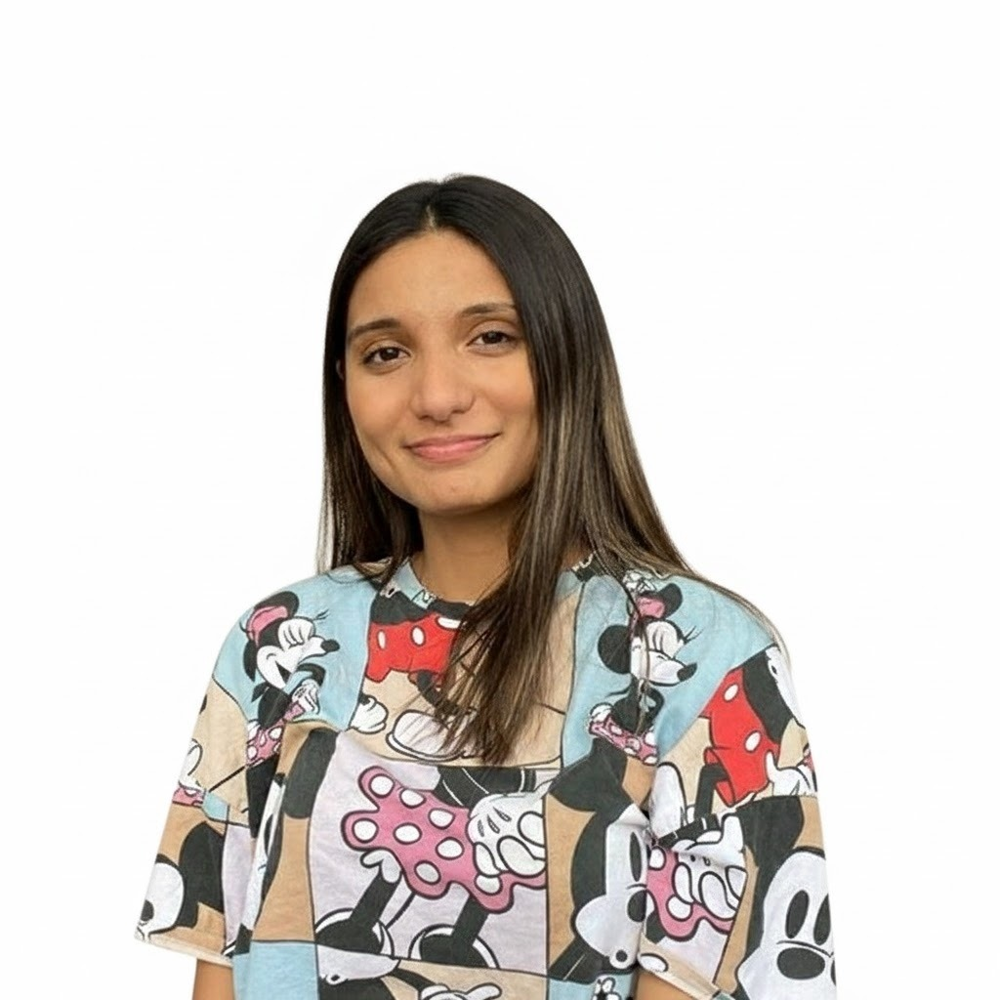
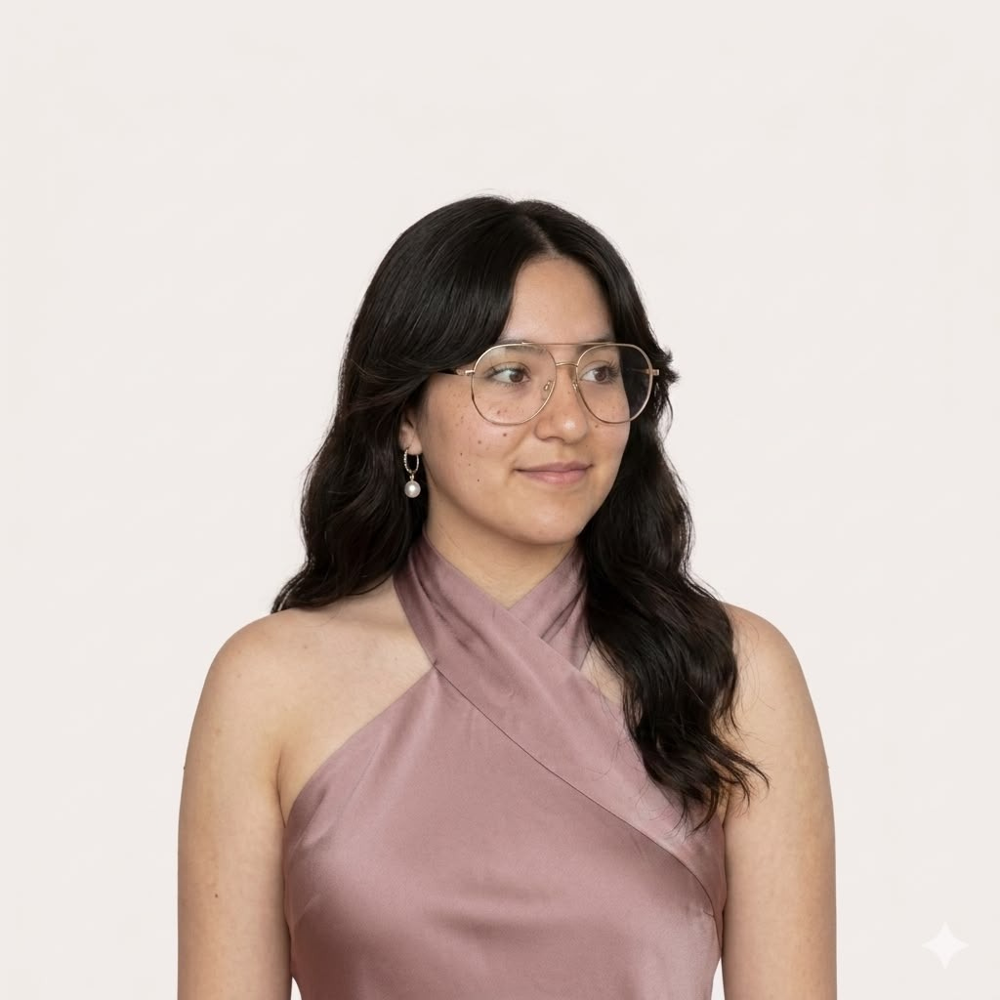

Un espacio para manejar la ansiedad, la depresión, los desafíos de comunicación y los conflictos de pareja.



Esta opción es para ti si quieres trabajar en temas personales como la ansiedad, depresión, autoestima, regulación de emociones, ruptura, entre otros.

Esta opción es para ustedes si quieren resolver juntos desafíos como la falta de comunicación o los conflictos constantes.

Mi trayectoria en la UNAM, en el área de la psicobiología y las neurociencias, me enseñó que la evidencia debe ser la base de cualquier intervención. Con el tiempo, mi enfoque se centró en el ámbito emocional, donde confirmé que la terapia no es solo ir a hablar, sino un proceso serio respaldado por enfoques clínicos de eficacia comprobada a largo plazo. De esa convicción nació este proyecto, con la misión de brindar resultados duraderos y expectativas realistas.
Nos diferenciamos por nuestro compromiso real con la calidad, alejado de estrategias de marketing. Cada psicóloga de nuestro equipo comparte una sólida formación y una calidez humana que genera una conexión auténtica. Nos hemos especializado en los temas que más te preocupan, lo que nos permite ofrecerte intervenciones más acertadas, en el menor tiempo posible y con la calidez que necesitas para sanar.
"¡Paola es una maravillosa terapeuta, es amable, cálida, clara y muy asertiva! Doy fé que tanto mis habilidades comunicacionales como mi relación con él han mejorado del cielo a la tierra! Lo mejor, es que es online, entonces tengo la suerte de tener el servicio desde Chile :)"
Francisca González Cohens
Paciente desde Chile
"Tienen muy buen plan de trabajo. Me apoyaron a visualizar de mejor manera situaciones que parecían muy difíciles... Gracias al apoyo de mi terapeuta Addi logre mantenerme en una de las etapas mas difíciles de mi vida."
Diego Martínez Hernández
Local Guide
"No me había dado cuenta de lo necesario que era... en mi momento más oscuro, lloraba todos los días... ahora puedo decir que me siento mucho mejor... ver que poco a poco puedo derrumbar esas creencias que yo solita me cree es increíble."
Sandra Chivico
Paciente
"Las sesiones con Lizbeth me han permitido descubrir mas sobre mi, ademas para mi, es muy importante hacer match con tu psicóloga, asi es que deseo continuar para seguir explorando mas posibilidades de mejoras y los beneficios que nos ofrece la terapia. :)"
Selena Vasquez
Paciente
"Muy buena atención, las terapias y las tareas muy buenas para poder llevar tu caso, 100% recomendable."
Carlos Montoya
Local Guide
"La psicóloga que me atiende me ayuda muchísimo. Me escucha. Me da buenas lecciones para encontrar mi felicidad ❤️"
Carolina Reyes
Paciente
La duración puede variar, pero nuestra experiencia muestra que los mejores resultados se logran en un promedio de 16 sesiones. Al inicio del proceso, recomendamos sesiones semanales o quincenales, y con el tiempo, la frecuencia se va espaciando.
Absolutamente. Nuestro equipo es experto en los temas que abordamos y ha pasado por un riguroso proceso de selección que evalúa su capacidad técnica y habilidades prácticas. Además, cada una participa en procesos de supervisión y capacitación interna para asegurar una calidad constante.
Entendemos que esto puede pasar. Si no te sientes cómodo/a con la profesional asignada, tenemos un protocolo para reasignarte a otra psicóloga del equipo. Trabajamos con notas clínicas que, con tu consentimiento, se comparten con la nueva psicóloga para que no tengas que repetir todo el proceso desde cero.
El acompañamiento psicológico se realiza durante las sesiones. Entendemos que pueden surgir dudas, por lo que puedes escribir para resolverlas, pero no damos atención en crisis por mensaje. Las sesiones son el espacio para trabajar tus emociones y procesos.
Tu privacidad es nuestra prioridad. Firmamos una carta de consentimiento al inicio del proceso para garantizar que tu información personal está resguardada con total confidencialidad, cumpliendo con las regulaciones de México.
Entendemos que los imprevistos suceden. Puedes cambiar o cancelar tu sesión con un aviso de al menos 24 horas para acceder a un reembolso o reprogramación. Los cambios solo se permiten una vez por sesión.
Sí. Aseguramos el tiempo y esfuerzo de nuestras psicólogas, ya que cada sesión conlleva horas de preparación, supervisión e investigación. También ofrecemos un paquete de 4 sesiones con un 10% de descuento.